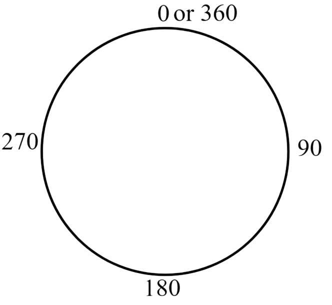
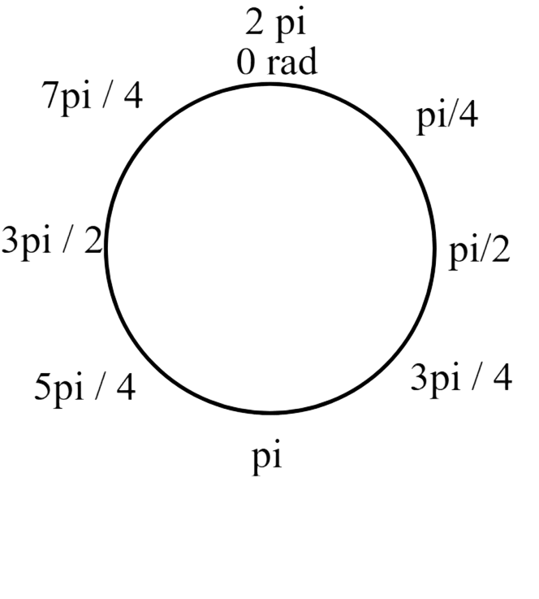

Trigonometry is the branch in mathematics that focuses primarily on triangles and angles. It is crutial in mathematics as certain architectures and shapes require trigonometry to be calculated.
A circle is the perfect example of angles. You see, a line going around the circle's perimeter is 360°. A circle is comprised of 360 degrees. This is called a revolution...

A full circle contains one revolution which is 360°. This is where radians comes in as they are even more essential in mathematics than degrees ever were. This is also the point where pi or &pi gets introduced. One revolution in radians is 2π and since π equals 3.14.. we can deduct that 1 π in radians is 180°. This formula is fundumental in Trigonometry...

This also means that 1° is pi over 180 radians...
Here are some examples...
Notice how the divisor is always 180 when I multiply. This is a common trick on how you can convert radians with pi to degrees. You multiply the dividend and the divisor by a certain number
that can make the divisor equal 180, then you remove the / 180 and then you're done!
You can also convert degrees to radians by using the same method.. just the other way...
Keep simplifying until you can't.
The Unit Circle is a circle at the center of the coordinate system with a radius of 1. The formula for creating the Unit Circle is x2 + y2 = 1.